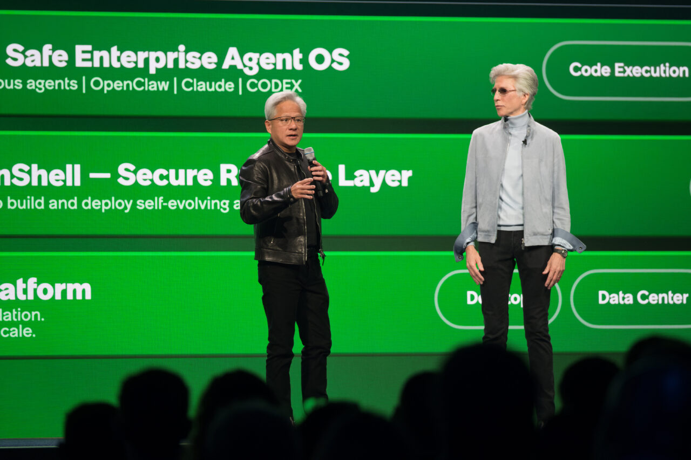
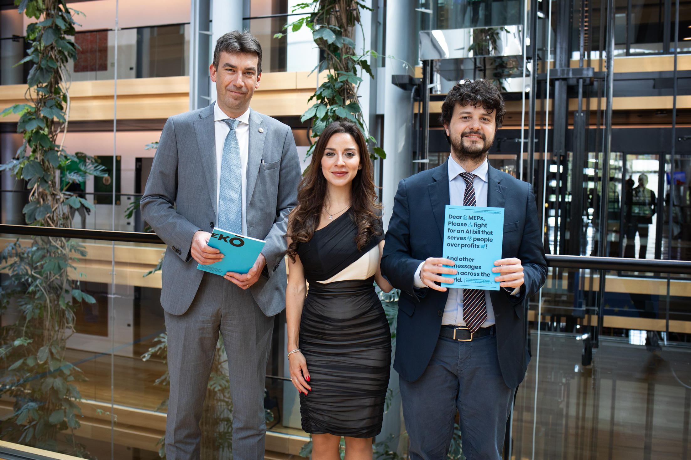

Executive Summary
2026년 5월, SAP는 200개가 넘는 전문 에이전트가 업무를 끝까지 실행하는 '자율 기업(Autonomous Enterprise)'을 선언했습니다. 그중 하나인 자율 마감 에이전트는 몇 주 걸리던 재무 마감을 며칠로 줄입니다. 더 이상 에이전트는 질문에 답하는 도구가 아니라, 장부를 만지고 결재를 일으키는 행위자입니다. 이 글은 그 행위자에게 빠져 있는 한 가지, 신원을 다룹니다.
사람이 입사하면 사번과 권한과 로그가 자동으로 붙습니다. 그런데 에이전트에게는 그게 없습니다. 클라우드 시큐리티 얼라이언스(CSA)가 보안 전문가 383명을 조사한 결과, 78%의 조직은 에이전트 신원을 만들고 없애는 정책조차 갖고 있지 않았습니다. 68%는 에이전트가 한 일과 사람이 한 일을 구분하지 못했습니다. 회사를 돌리는 행위자의 절반 이상이 사번 없는 유령으로 일하고 있는 셈입니다.
자율 기업의 진짜 인프라는 더 똑똑한 모델이 아닙니다. 누가 어떤 데이터에 접근해 무엇을 바꿨는지를 추적하고 검증하는 데이터 신원·계보 체계입니다. 자율화의 속도는 데이터 거버넌스의 성숙도를 넘지 못합니다.
네 개의 숫자가 이 격차의 윤곽을 그립니다. SAP가 오케스트레이션한다고 밝힌 전문 에이전트의 수, 그 에이전트들에게 신원 정책이 없는 조직의 비율, 에이전트와 사람의 행동을 구분하지 못하는 비율, 그리고 회사 안에서 비인간 신원이 사람을 앞지른 배수입니다.
200+
SAP 전문 에이전트
Autonomous Suite 전반에서 오케스트레이션 (SAP, 2026-05)
78%
신원 정책 없는 조직
에이전트 신원 생성·제거 정책 부재 (CSA·Oasis, n=383)
68%
행동 구분 불가
에이전트와 사람의 행동을 구분하지 못함 (CSA, 2026-03)
80:1
비인간 대 인간 신원
회사 안 비인간 신원이 사람을 앞지른 배수 (KPMG, 2026)
에이전트 200개가 이미 장부를 만진다
2026년 5월 SAP Sapphire 현장에서 SAP는 '자율 기업'을 선언했습니다. 핵심은 숫자로 압축됩니다. 200개가 넘는 전문 에이전트가 SAP Autonomous Suite 전반에서 오케스트레이션되고, 재무·공급망·구매·인사·고객경험에 50개가 넘는 도메인별 Joule 어시스턴트가 배치됩니다. 마케팅 수사가 아니라, 한 회사의 핵심 업무 곳곳에 자율 실행자를 심겠다는 제품 발표입니다.
가장 상징적인 사례가 자율 마감(Autonomous Close) 에이전트입니다. 분개와 대사, 오류 해결을 자동으로 처리해 몇 주씩 걸리던 재무 마감을 며칠로 줄입니다. 여기서 중요한 것은 속도가 아니라 행위의 성격입니다. 이 에이전트는 회계 장부를 직접 건드립니다. 자율 자산 관리 에이전트는 수천 건의 과거 사건을 분석해 근본 원인을 찾고 작업 지시서를 사람보다 먼저 작성합니다. 읽기만 하는 도구가 아니라 쓰기를 일으키는 행위자입니다.
SAP만의 흐름도 아닙니다. NVIDIA와 ServiceNow는 장시간 실행되는 자율 데스크톱 에이전트 Project Arc를 내놓았고, Prosus의 2026년 조사는 에이전트가 사람 개입 없이 거의 다섯 시간을 자율로 달릴 수 있게 됐다고 보고합니다. 무게중심은 이미 '가장 똑똑한 모델'에서 '신뢰할 수 있는 프로덕션 배포'로 옮겨 갔습니다. 능력 경쟁은 어느 정도 결판이 났고, 남은 질문은 다른 곳에 있습니다.
달라진 전제: 에이전트는 더 이상 검색창 옆의 도우미가 아닙니다. 결재를 일으키고, 장부를 바꾸고, 작업을 지시하는 행위자입니다. 사람이 그런 일을 하면 우리는 당연히 묻습니다. 누가 했는가. 그런데 에이전트에게는 그 질문에 답할 장치가 아직 없습니다.

사람에겐 사번이, 에이전트에겐 아무것도 없다
사람이 회사에 들어오는 과정을 떠올려 봅시다. 입사하면 사번이 부여되고, 직무에 맞는 권한이 설정되고, 접근하는 시스템마다 로그가 남습니다. 누가 언제 무엇을 했는지 사후에 재구성할 수 있도록 신원이라는 뼈대가 먼저 깔립니다. 감사와 컴플라이언스는 그 뼈대 위에서 작동합니다.
에이전트에게는 이 뼈대가 통째로 빠져 있습니다. CSA와 Oasis Security가 2026년 1월 보안 전문가 383명을 조사한 결과, 78%의 조직은 에이전트 신원을 만들고 없애는 문서화된 정책이 없었습니다. 92%는 기존 IAM 체계가 비인간 신원의 위험을 효과적으로 관리한다고 확신하지 못했습니다. 도입은 이미 끝났는데 신원 관리는 시작도 안 한 상태입니다.
규모를 보면 이 공백이 왜 위험한지 분명해집니다. Okta의 2026년 조사에서 91%의 조직이 이미 AI 에이전트를 쓰고 있었지만, 거버넌스를 갖춘 곳은 10% 수준에 그쳤습니다. KPMG는 회사 안에서 비인간 신원이 사람을 80대 1로 앞질렀다고 집계합니다. 사람 한 명당 여든 개의 자동화된 신원이 시스템을 드나드는데, 그중 다수는 누구인지 추적되지 않습니다.

가장 직접적인 증상은 구분 불능입니다. CSA 조사에서 68%의 조직은 에이전트가 한 일과 사람이 한 일을 명확히 구분하지 못했습니다. 로그를 열어 봐도 어떤 변경이 직원의 손에서 나왔고 어떤 변경이 에이전트의 자율 실행에서 나왔는지 가려낼 수 없다는 뜻입니다. 행위자는 분명히 있는데, 그 행위자의 정체가 기록에 남지 않습니다.
유령의 정의: 신원이 없고, 권한이 RBAC로 관리되지 않으며, 행동이 누구의 것인지 기록되지 않는 행위자. 지금 대부분의 조직에서 에이전트는 이 정의에 정확히 들어맞습니다. 일은 직원처럼 하는데, 회사 구조는 여전히 이들을 소프트웨어로 취급합니다.
'거의 맞음'으로는 결재를 책임질 수 없다
SAP CEO 크리스티안 클라인은 발표에서 이렇게 말했습니다. "미션 크리티컬한 프로세스에서 '거의 맞음'은 충분하지 않다." 맞는 말입니다. 그런데 이 문장은 정확성만이 아니라 책임의 문제이기도 합니다. 결과가 거의 맞았는지 완전히 틀렸는지를 따지려면, 먼저 그 결과를 누가 만들었는지 재구성할 수 있어야 합니다. 클라인이 같은 자리에서 AI 에이전트를 "데이터와 거버넌스에 앵커링한다"고 강조한 이유가 여기에 있습니다.
현실의 준비도는 그 선언을 따라가지 못합니다. Gravitee가 900명 넘는 실무자를 조사한 결과, 88%가 에이전트 관련 보안 사고를 확인하거나 의심했습니다. 그런데 45.6%는 여전히 공유 API 키 하나로 여러 에이전트를 인증하고 있었습니다. 공유 키로 움직이는 에이전트는 사고가 나도 어느 에이전트가 무엇을 했는지 가려낼 수 없습니다. 신원이 공유되는 순간 책임 추적은 원천적으로 불가능해집니다.
자율성이 빨라질수록 이 문제는 더 날카로워집니다. 에이전트가 다섯 시간을 자율로 달리는 동안 수십 번의 데이터 접근과 변경이 사람 눈에 보이지 않게 쌓입니다. 사후에 로그를 뒤져 재구성하는 방식으로는 따라잡을 수 없습니다. 업계가 내린 결론은 분명합니다. 정책은 사후 검토가 아니라 행동이 일어나는 바로 그 순간에 집행되어야 합니다.
벤더들은 이미 이 방향으로 움직이고 있습니다. ServiceNow의 AI Control Tower는 에이전트의 행동을 실시간으로 모니터링하고 감사 가능성을 제공하며, NVIDIA의 OpenShell은 에이전트의 권한과 도구 접근을 정책으로 봉쇄하는 런타임을 제공합니다. 런타임 거버넌스와 감사 추적이 부가 기능이 아니라 제품의 1급 기능으로 출시된다는 것은, 거버넌스가 곧 인프라라는 업계의 합의를 보여 줍니다.

신원의 토대는 결국 데이터 계보다
여기서 한 단계 더 내려가야 합니다. 에이전트에게 신원을 부여하는 것만으로는 끝나지 않습니다. 사번을 발급해도 "이 에이전트가 어떤 소스에서 무엇을 읽어 무엇을 바꿨는가"에 답하지 못하면, 그 신원은 이름표일 뿐 추적 장치가 되지 못합니다. 책임을 묻는 질문은 늘 데이터를 향합니다. 어느 테이블의 어느 값이, 누구의 손을 거쳐, 어떤 근거로 바뀌었는가.
엔터프라이즈 거버넌스 플레이북이 네 개의 기둥을 말하는 이유가 그것입니다. 에이전트 신원, 런타임 집행, 종합 감사, 그리고 데이터 계보(lineage)입니다. 앞의 세 기둥이 "누가, 무슨 권한으로, 무엇을 했나"를 다룬다면, 계보는 "그 행동이 어떤 데이터에 어떤 흔적을 남겼나"를 다룹니다. 계보가 빠지면 나머지 셋이 헛돕니다. 신원과 권한이 완벽해도, 데이터 자체가 자기 출처를 모르면 행동의 결과를 끝까지 추적할 수 없기 때문입니다.

앞 섹션의 자율 마감 에이전트를 다시 떠올려 봅시다. 이 에이전트가 분기 매출의 어떤 값을 조정했다면, 신원 기록 덕분에 "누가 했는가"까지는 답할 수 있습니다. 그러나 그 조정이 어느 원천 데이터를 근거로 이전 값을 무엇으로 바꾼 것인지를 데이터가 스스로 기억하지 못하면, 감사관의 다음 질문인 "왜 이렇게 바뀌었는가"에서 추적은 멈춰 섭니다. 신원은 책임의 절반만 채웁니다. 나머지 절반은 데이터가 자기 내력을 들고 있을 때 비로소 채워집니다.
AI-Ready Data의 관점은 이 계보를 데이터 안쪽에 내장합니다. 모든 사실(fact)은 자신이 어느 소스 문서와 어느 쓰기 이벤트에서 나왔는지를 역추적할 수 있어야 하고, 민감도와 지역, 보존 기간, 접근 통제(ACL) 같은 속성이 데이터와 함께 따라다녀야 합니다. 이렇게 출처가 데이터에 새겨져 있으면, 에이전트가 무엇을 만지는 순간 그 행동은 자동으로 추적 가능한 기록이 됩니다. 신원이 행위자 쪽의 답이라면, 계보는 데이터 쪽의 답입니다. 둘이 만나야 비로소 "누가 무엇을 했나"가 끝까지 재구성됩니다.
순서의 문제: 에이전트에게 사번을 주는 일은 데이터가 자기 계보를 기억할 때만 의미를 갖습니다. 출처를 모르는 데이터 위에서는 아무리 정교한 신원 체계를 올려도 추적이 중간에 끊깁니다. 그래서 에이전트 거버넌스의 시작점은 IAM 도입이 아니라, 데이터에 출처와 권한을 새겨 넣는 일입니다.
당신 회사의 에이전트는 직원인가 유령인가
추상적인 진단을 구체적인 질문으로 바꿔 봅시다. 지금 당신 회사에서 일하는 에이전트를 두고, 네 가지를 물어보면 됩니다. 답이 막히는 곳이 곧 거버넌스의 구멍입니다.
- • 신원 — 각 에이전트가 사람처럼 고유한 신원을 갖고 있는가, 아니면 여러 에이전트가 공유 키 하나로 움직이는가?
- • 계보 — 에이전트의 행동 로그가 그것이 만진 데이터의 출처까지 역추적되는가?
- • 재구성 — 사고가 났을 때, 어느 에이전트가 무슨 근거로 무엇을 바꿨는지 사후에 복원할 수 있는가?
- • 권한 — 에이전트의 접근 권한이 RBAC로 관리되며, 필요 이상의 데이터에 손을 못 대도록 봉쇄되어 있는가?
네 질문에 모두 "그렇다"고 답할 수 있으면 당신 회사의 에이전트는 직원입니다. 하나라도 막히면 그만큼은 유령입니다. 그리고 이 진단은 곧 규제의 언어로 번역됩니다. EU AI Act의 고위험 AI 요건은 2026년 8월 2일부터 시행되며, 위반 시 벌금은 최대 3,500만 유로 또는 글로벌 매출의 7%에 이릅니다. 설명 가능성과 데이터 계보가 사실상 의무가 되는 셈입니다. "누가 무엇을 했는지 재구성할 수 있는가"는 더 이상 모범 사례가 아니라 법적 요건입니다.

결론은 단순합니다. 자율 기업으로 가는 길에서 병목은 모델의 지능이 아니라 데이터 거버넌스의 성숙도입니다. 더 똑똑한 에이전트를 한 대 더 사기 전에, 이미 일하고 있는 에이전트에게 줄 데이터 신원부터 만들어야 합니다. 자율화의 속도는 데이터 거버넌스의 성숙도를 넘지 못하기 때문입니다.
Editor's Note
에이전트가 안심하고 만질 수 있도록 데이터에 출처와 권한을 새겨 넣는 일. 페블러스가 AI-Ready Data를 이야기할 때 가리키는 지점이 바로 여기입니다. 사실마다 소스와 쓰기 이벤트를 역추적할 수 있게 하고, 민감도와 접근 통제를 데이터와 함께 움직이게 하는 일이 우리가 풀려는 문제입니다. 자율 기업의 토대를 모델이 아니라 데이터에서 찾는 관점입니다.
참고문헌
업계 발표
- 1.SAP. (2026). "At SAP Sapphire, SAP Unveils the Autonomous Enterprise." SAP News. — 200개+ 전문 에이전트, 자율 마감, CEO Klein '데이터와 거버넌스에 앵커링'.
- 2.NVIDIA. (2026). "ServiceNow and NVIDIA Build Autonomous AI Agents for Enterprises." NVIDIA Blog. — Project Arc, AI Control Tower, OpenShell 런타임 거버넌스.
- 3.Prosus. (2026). "State of AI Agents 2026: Autonomy Is Here." Prosus. — 무게중심 이동, 에이전트 5시간 자율 실행.
조사·통계
- 4.Cloud Security Alliance & Oasis Security. (2026). "The State of Non-Human Identity and AI Security." CSA. — n=383, 78% 신원 정책 부재, 92% 레거시 IAM 불신.
- 5.Cloud Security Alliance. (2026). "More Than Two-Thirds of Organizations Cannot Clearly Distinguish AI Agent From Human Actions." CSA Press Release. — 68% 행동 구분 불가.
- 6.Okta. (2026). "AI Agents at Work 2026." Okta Newsroom. — 91% 에이전트 사용, 거버넌스 10% 수준.
- 7.Gravitee. (2026). "State of AI Agent Security 2026." Gravitee Blog. — 88% 보안 사고, 45.6% 공유 API 키 인증.
프레임워크·실무
- 8.Promethium. (2026). "AI Agent Data Governance: The Enterprise Playbook for 2026." Promethium Guides. — 4기둥(신원·런타임 집행·감사·계보), '행동의 순간 집행'.